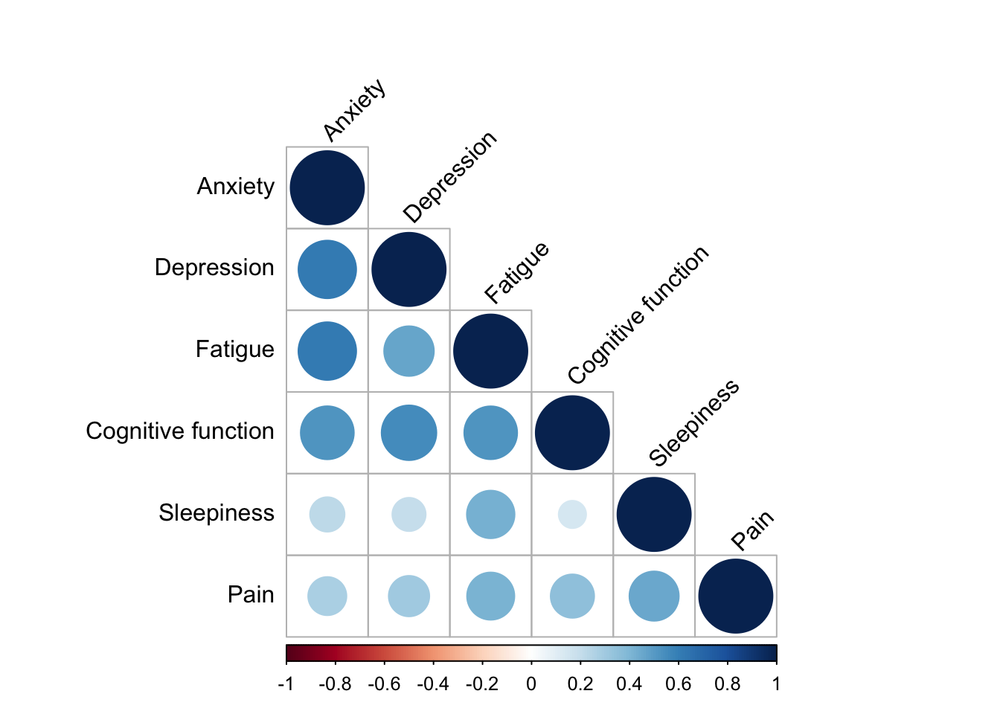
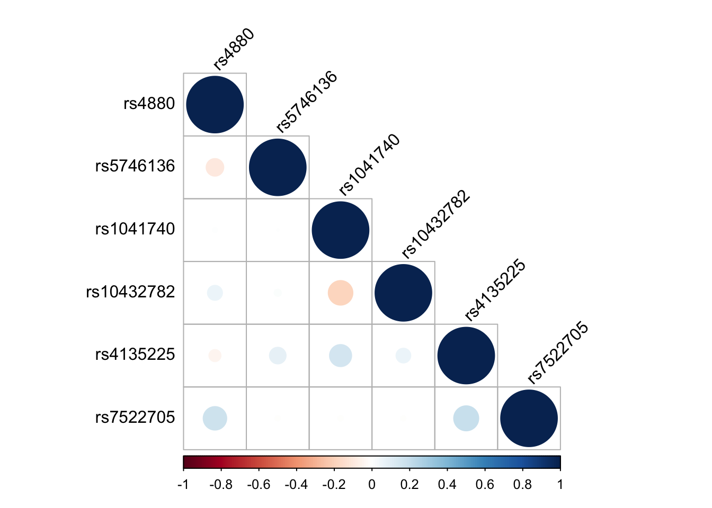

library(tidyverse)
library(pander)
library(preprocessCore)
library(corrplot) 2 Data preparation
2.1 Overview
A fully synthetic example data set has been created to accompany this repository so that we can freely and safely document the analytical steps and interpretation related to our two exemplar multivariate Bayesian approaches. The real data from which the synthetic data were generated were collected via a nurse-led study from the University of Pittsburgh (PI: Dr. Cathy Bender) focused on individuals with breast cancer. The study collected extensive data related to symptoms, and a sub-study (PI: Dr. Tara Davis) collected candidate gene single nucleotide polymorphism (SNP) data. Candidate symptoms selected for inclusion in this tutorial included anxiety, depression, fatigue, daytime sleepiness, cognitive function, and pain. Candidate SNPs selected for examination in this study included rs4880, rs5746136, rs1041740, rs10432782, rs4135225, and rs7522705. The original data set consisted of 110 participants. For the purposes of our examples, a larger, synthetic data set mirroring the statistical properties of the original data set was created. The data set contains 770 participants.
2.2 Load libraries
Install and/or load the libraries needed to run the code.
2.3 Prepare data for multivariate analyses
The programs we will use for multivariate analyses (bnlearn and mvBIMBAM) require the data to be in a specific format for analysis. Here we are preparing and formatting the data for analysis.
2.3.1 Read in the synthetic data set
Please see the introduction for information regarding the example synthetic data set.
# Read in the synthetic data set created for use with this example analysis code
df_synth <- read.csv("data/BrCa_synthetic.csv") ###CUSTOMIZE**
head(df_synth) ID EMO_tscore bdito FAT_tscore paohcif EPSscore pain age education race
1 1000 47.8 8 46.9 0 5 0 60 18 0
2 1001 47.8 8 49.2 4 12 3 51 21 0
3 1002 49.4 18 50.4 16 12 1 57 20 0
4 1003 45.9 3 38.5 6 2 0 51 16 0
5 1004 50.8 6 46.9 0 7 1 63 16 0
6 1005 37.1 0 38.5 0 2 1 59 15 0
rs4880 rs5746136 rs1041740 rs10432782 rs4135225 rs7522705
1 1 0 1 1 1 1
2 2 1 0 1 0 2
3 2 1 0 0 0 0
4 1 1 0 0 1 1
5 0 1 1 0 1 0
6 1 0 0 0 1 1(n <- nrow(df_synth))[1] 770# Define the phenotypes (in this case, symptoms) of interest and mapping names
traits <- c("EMO_tscore", "bdito", "FAT_tscore", "paohcif", "EPSscore", "pain") ###CUSTOMIZE**
# Define a trait mapping object to create custom labels for figures
# (e.g., EMO_tscore variable represents our measure of Anxiety; bdito represents our measure of depression; etc.)
trait_mapping <- c("Anxiety", "Depression", "Fatigue", "Cognitive function", "Sleepiness", "Pain") ###CUSTOMIZE**
# Create custom labels
custom_labels <- setNames(trait_mapping, traits)
# Define variants of interest
genes <- c("rs4880", "rs5746136", "rs1041740", "rs10432782", "rs4135225", "rs7522705") ###CUSTOMIZE**
# Create expanded custom labels
custom_labels2 <- c(custom_labels, setNames(genes, genes))
# Combine traits and genes
vertex.names <- c(traits, genes)
# Create type vector
types <- c(rep("Symptom", length(traits)), rep("Genotype", length(genes)))
# Create the dataframe
df_vertex_table <- data.frame(
vertex.names = vertex.names,
type = types,
stringsAsFactors = FALSE
)
# Replace vertex.names with the corresponding custom labels
df_vertex_table$vertex.names <- custom_labels2[match(df_vertex_table$vertex.names, names(custom_labels2))]Check that all variables are numeric or integer. NOTE: The code below assumes that all SNP names begin with “rs” and no trait names begin with “rs”.
rs_columns <- grep("^rs", names(df_synth), value = TRUE)
non_numeric_rs_columns <- rs_columns[!sapply(df_synth[rs_columns], is.numeric)]
if (length(non_numeric_rs_columns) > 0) {
cat("SAFETY CHECK WARNING: The following variables starting with 'rs' are not numeric:", paste(non_numeric_rs_columns, collapse = ", "), "\n")
} else {
cat("SAFETY CHECK PASSED: All 'rs' variables are numeric.\n")
}SAFETY CHECK PASSED: All 'rs' variables are numeric.In brief, the data set focuses on 6 symptoms (EMO_tscore, bdito, FAT_tscore, paohcif, EPSscore, pain) and 6 candidate variants of interest (rs4880, rs5746136, rs1041740, rs10432782, rs4135225, rs7522705) and contains 770 participants.
# Read in a mapping of variable name to informative label
dict <- read.csv("data/BrCa_synthetic_SimpleDict.csv") ###CUSTOMIZE** (OPTIONAL)
pander(dict, "Data dictionary") | Variable | Label | Description |
|---|---|---|
| Emo_tscore | Anxiety | PROMIS Emotional Distress Anxiety (Short Form 8a) - 8 items measuring emotional distress and anxiety (panic, fearfulness, worry, dread, tension,nervousness, restlessness, and somatic symptoms including racing heart and dizziness) in the last 7 days. This instrument generates T-scores, which are standard scores with a mean of 50 and standard deviation of 10 in the U.S. general population. Higher T-scores indicate worse distress and anxiety. T-scores range from 10 to 90. |
| bdito | Depression | The Beck Depression Inventory-II - 21-items measuring severity of depression (i.e., grief, loss, flat affect, withdrawal, mania) over a two-week period. Scores range from 0 to 63, where high scores indicate higher levels or more severe depression. |
| FAT_tscore | Fatigue | PROMIS Fatigue (Short Form 8a) - 8 items measuring the experience of fatigue and the interference of fatigue on daily activities over the past 7 days. This instrument generates T-scores, which are standard scores with a mean of 50 and standard deviation of 10 in the U.S. general population. Higher T-scores indicate worse fatigue. T-scores range from 10 to 90. |
| paohcif | Cognitive function | Patient assessment of own cognitive functioning - 33 items measuring self-reported ‘recent’ cognitive function consisting of 5 dimensions: memory, language and communication, use of hands, sensory-perceptual, higher level cognitive and intellectual functioning. Higher scores indicate worse perceived cognitive functioning. Scores range from 0 to 155. |
| EPSscore | Sleepiness | Epworth Sleepiness Scale - 8 item scale measuring self-reported ‘recent’ daytime sleepiness. Higher score indicate greater daytime sleepiness. Scores range from 0 to 24. |
| pain | Pain | Brief Pain Inventory (Short Form) - 9 items a widely used clinical tool for assessing pain (worst pain in the last 24 hours [0-10], least pain in the last 24 hours [0-10], pain on average [0-10], paing at the time of the interview [0-10], pain relief from treatment(s) in the last 24 hours [0%-100%]). Higher scores indicate higher levels of pain, each item ranges from 0-10. |
| rs4880 | Variant 1 | SOD2 gene, hg19 postion chr6: 160113872 |
| rs5746136 | Variant 2 | SOD2 gene, hg19 postiion chr6: 160103084 |
| rs1041740 | Variant 3 | SOD1 gene, hg19 postiion chr21: 33040162 |
| rs10432782 | Variant 4 | SOD1 gene, hg19 postiion chr21: 33036391 |
| rs4135225 | Variant 5 | TXN gene, hg19 postiion chr9: 113006691 |
| rs7522705 | Variant 6 | PRDX1 gene, hg19 postiion chr1: 45992300 |
| race | Race | Self-identified race, 0=White, 1=Black |
| age | Age | Age in years |
| education | Education | Self-reported years of education |
| Type | Citation |
|---|---|
| Numeric | Pilkonis, P.A. et al. (2011) Item banks for measureing emotional distress from the patient-reported outcomes measurement information system (PROMIS): Depression, Anxiety, and Anger, Assesssment, 18(3), 263-283 |
| Numeric | Beck, A.T. et al. (1996) Beck Depression Inventory-II. San Antonio: The Psychological Corporation |
| Numeric | Cell, D. et al. (2016) PROMIS fatigue item bank had clinical validity across diverse chronic conditions. Journal of Clinical Epidemiology, 73, 128-134 |
| Numeric | Chelune, G. J. et al. (1986) Neuropsychological and personality correlates of patients’ complaints of disability. Advances in clinical Neuropsychology, 1986:95-126 |
| Numeric | Johns MW. A new method for measuring daytime sleepiness: The Epworth Sleepiness Scale. Sleep 1991; 14(6):540-5 |
| Numeric | Cleeland, C.S. et al. (2009). Pain assessment: Global use of the Brief Pain Inventory. Annals, Academy of Medicine, Sigapore, 23(2), 129-138. |
| Numeric | |
| Numeric | |
| Numeric | |
| Numeric | |
| Numeric | |
| Numeric | |
| Numeric, encoded value | |
| Numeric | |
| Numeric |
2.3.2 Examine correlation structure of the symptoms
# Subset the dataset to include only the selected traits
subset_df <- df_synth[traits]
# Calculate the correlation matrix
cor_matrix <- cor(subset_df, use = "complete.obs")
# Define custom labels for rows and columns
# Update row and column names using custom labels
rownames(cor_matrix) <- custom_labels[rownames(cor_matrix)]
colnames(cor_matrix) <- custom_labels[colnames(cor_matrix)]
# Create a correlation plot
corrplot(cor_matrix, method = "circle", type = "lower", tl.col = "black", tl.srt = 45)
2.3.3 Examine correlation structure of SNPs
# Subset the dataset to include only the selected traits
subset_df <- df_synth[genes]
# Calculate the correlation matrix
cor_matrix <- cor(subset_df, use = "complete.obs")
# Create a correlation plot
corrplot(cor_matrix, method = "circle", type = "lower", tl.col = "black", tl.srt = 45)
2.3.4 Summarize missing data
missing_data_table <- df_synth %>%
summarise(across(everything(), ~sum(is.na(.)))) %>% # Count NA values in each column
gather(key = "Column", value = "Number_of_NAs") %>% # Convert to long format
arrange(desc(Number_of_NAs)) # Sort by the number of NAs
pander(missing_data_table)| Column | Number_of_NAs |
|---|---|
| EMO_tscore | 7 |
| ID | 0 |
| bdito | 0 |
| FAT_tscore | 0 |
| paohcif | 0 |
| EPSscore | 0 |
| pain | 0 |
| age | 0 |
| education | 0 |
| race | 0 |
| rs4880 | 0 |
| rs5746136 | 0 |
| rs1041740 | 0 |
| rs10432782 | 0 |
| rs4135225 | 0 |
| rs7522705 | 0 |
2.3.5 Clean up data
First, let’s prepare our data sets. Currently, the software we are using does not allow missing data for multivariate phenotype analysis, so select complete cases only. We will also set up a few data frames in preparation to regress out variation related to our covariates of interest (in this example, age and race).
df_i1_regress: contains all variables of interest ordered and filtered for complete cases
df_i1: contains all variables except the covariates that will be regressed out below (in this example, age and race)
df_synth: Recode 0, 1, 2 genotypes to AA, AB, BB for later use in mvBIMBAM
# The first data frame (df_i1_regress) contains all variables of interest ordered
# and filtered for complete cases
df_i1_regress <- df_synth %>%
select(all_of(genes),
all_of(traits),
race, ###CUSTOMIZE** (covariate names, replacing age and race)
age) %>% ###CUSTOMIZE** (covariate names, replacing age and race)
filter(complete.cases(.))
(n <- nrow(df_i1_regress))[1] 763# The second data frame (df_i1) contains all variables except the covariates that
# will be regressed out (in this example, age and race)
df_i1 <- df_i1_regress %>%
select(all_of(genes), all_of(traits)) %>%
filter(complete.cases(.))
# Note, if covariates have a unique pattern of missing data, df_i1 could
# be smaller/different than df_i1_regress. Printing number of rows in df_i1 to check
print(dim(df_i1)[1])[1] 763print(dim(df_i1_regress)[1])[1] 763# Recode 0, 1, 2 genotypes to AA, AB, BB for later use in mvBIMBAM
df_synth <- df_synth %>%
mutate_at(
.vars = vars(starts_with("rs")),
.funs = list(~ case_when(
. == 2 ~ "BB",
. == 1 ~ "AB",
. == 0 ~ "AA"
))
)
# Create Genotype (G) and Phenotype (Y) matrices
G <- as.matrix(df_i1 %>% select(all_of(genes)))
head(G) rs4880 rs5746136 rs1041740 rs10432782 rs4135225 rs7522705
[1,] 1 0 1 1 1 1
[2,] 2 1 0 1 0 2
[3,] 2 1 0 0 0 0
[4,] 1 1 0 0 1 1
[5,] 0 1 1 0 1 0
[6,] 1 0 0 0 1 1Y <- as.matrix(df_i1 %>% select(all_of(traits)))
head(Y) EMO_tscore bdito FAT_tscore paohcif EPSscore pain
[1,] 47.8 8 46.9 0 5 0
[2,] 47.8 8 49.2 4 12 3
[3,] 49.4 18 50.4 16 12 1
[4,] 45.9 3 38.5 6 2 0
[5,] 50.8 6 46.9 0 7 1
[6,] 37.1 0 38.5 0 2 1There are 763 participants with complete data that we will retain for our analyses.
2.3.6 Normalize and adjust data for covariates
In this example, we are adjusting our phenotypes of interest for the covariates age and race using ordinary linear regression models. If adapting this code for your own work, manually edit the covariate names in the f_quatile_norm_resid() function. Note that the sensitivity of the Bayesian multivariate mvBIMBAM framework to outlier values and non-normality also necessitates the normalization of phenotypes. As shown below, residualized phenotypes (i.e., adjusted for age/race) are quantile-normalized.
2.3.6.1 Create adjustment/normalization functions
We now create a function to perform residual adjustment for covariates (in this example, we are adjusting for age and race):
f_quantile_norm_resid <- function(Y, df) {
{o <- apply(Y, 2, function(x) resid(lm(x ~ age + race, data = df)))} ###CUSTOMIZE** (covariate names, replacing age and race)
return(o)
}If adapting this code above for your own work, edit the x ~ age + race regression formula to adjust for covariates of interest, replacing age and race with your covariate variable names.
We now create function to ‘super quantile normalize’ the data:
f_quantile_normalize_adjust <- function(Y, data, ...) {
# Quantile normalize
Y_qn <- normalize.quantiles(Y)
# Fit Y ~ age + race, extra residual (using function created above)
Y_qn_resid <- f_quantile_norm_resid(Y = Y_qn, df = data, ...)
# Quantile normalize the residual
Y_qn_resid_qn <- data.frame(normalize.quantiles(Y_qn_resid))
return(Y_qn_resid_qn)
}2.3.6.2 Apply functions to perform normalization and covariate adjustment
# Create a quantile normalized adjusted Y data frame (i.e., quantile normalization
# and covariate adjustment is performed in one fell swoop)
qn_resid_Y <- f_quantile_normalize_adjust(Y, data = df_i1_regress)
# Create a copy of this data frame for use later in this workflow
qn_resid_Y_b <- qn_resid_Y
# Rename the columns of the quantile normalized data frame to match the
# phenotypes of interest
names(qn_resid_Y) <- traits
head(qn_resid_Y) EMO_tscore bdito FAT_tscore paohcif EPSscore pain
1 -0.8851885 2.30362054 -3.330215 -5.645429 -3.414409 -6.012957
2 -1.9542886 0.09188708 -3.221254 -1.577718 7.196097 1.066255
3 -0.1561693 9.13047401 -2.133030 13.281734 8.530244 -3.592499
4 -3.4144091 -6.10527417 -7.413173 1.066255 -8.598853 -7.199561
5 1.8913640 0.83681075 -2.840231 -4.802835 1.891364 -1.847911
6 -6.1052742 -8.14287258 -6.446351 -6.057697 -8.142873 -2.818185Note: For one test user (DM), the above chunk threw the error:
Error in normalize.quantiles(Y) :
ERROR; return code from pthread_create() is 22This issue was resolved by updating RStudio to the latest version.
2.3.7 Remove outliers
Observations in violation of multivariate normality at an alpha=0.01 level based on Mahalanobis distance-based test statistics are now removed to avoid spurious conclusions.
2.3.7.1 Write a function to calculate Mahalanobis distance
# Create a function to calculate Mahalanobis distance
getMD <- function(x) {
Sx <- cov(x)
m <- mahalanobis(x, colMeans(x), Sx)
return(m)
}2.3.7.2 Apply function to identify outliers
# Drop individuals with data violating multivariate normality at alpha = 0.01
i_keep <- which(pchisq(getMD(qn_resid_Y_b), df = dim(Y)[2]) > 0.01)2.3.8 Create a summary
# Record sample sizes in a summary table
table1 <- data.frame(study=rep(NA,1),N.traits=NA,N.variants=NA,N.total=NA,n.complete=NA,n.used=NA)
i <- 1
table1[i,"study"] <- "Study Name" ###CUSTOMIZE** (study name)
table1[i,"N.total"] <- nrow(df_synth)
table1[i,"n.complete"] <- nrow(qn_resid_Y)
table1[i,"n.used"] <- nrow(qn_resid_Y[i_keep, ])
table1[i,"N.traits"] <- ncol(qn_resid_Y)
table1[i,"N.variants"] <- length(genes)
table1[i,] study N.traits N.variants N.total n.complete n.used
1 Study Name 6 6 770 763 763# Print number of observations due to violation of multivariate normality
cat(dim(Y)[1] - length(i_keep), " Obs removed due to violation of MV-Normality")0 Obs removed due to violation of MV-Normality# Add to summary table
table1$n.removed <- table1$N.total - table1$n.used
table1$percent.removed <- round(100*table1$n.removed/table1$N.total,2)pander(table1,caption="Sample sizes")| study | N.traits | N.variants | N.total | n.complete | n.used | n.removed |
|---|---|---|---|---|---|---|
| Study Name | 6 | 6 | 770 | 763 | 763 | 7 |
| percent.removed |
|---|
| 0.91 |
Less than 1% of participants were removed in data processing.
2.3.9 Prepare and save final files
2.3.9.1 Data used in both programs
# Check for data directory; if not present, create it
if (!dir.exists("./data")) {
dir.create("./data")
}
# Write data
save(traits, genes, trait_mapping, custom_labels, custom_labels2, df_vertex_table, file = "./data/TraitsGenes.RData") ###CUSTOMIZE** (optional, file name)2.3.9.2 mvBIMBAM
# Write phenotypes to a text file for use in mvBIMBAM
if (!dir.exists("./inputs")) {
dir.create("./inputs")
}
write.table(round(qn_resid_Y[i_keep,], 8),
"./inputs/pheno_bimbam.txt", sep = " ", ###CUSTOMIZE** (optional, file name)
row.names = F, col.names = F)
# Refine genotype data for mvBIMBAM and write file
Geno_write <- df_synth %>% select(all_of(genes), all_of(traits)) %>%
filter(complete.cases(.)) %>%
select(all_of(genes)) %>%
{.[i_keep,]} # Apply i_keep matrix here to retain non-outlying participants
# Grep rs column numbers to create the geno_string file required for mvBIMBAM format
rs_cols <- grep("^rs", colnames(df_synth), value = TRUE)
# Create geno_string format required for mvBIMBAM, filtering data set for only i_keep participants
Geno_String <- map(rs_cols, ~ {
Geno_write <- df_synth %>%
select(all_of(.x), all_of(traits)) %>%
filter(complete.cases(.)) %>%
select(all_of(.x))%>%
{.[i_keep,]}
# Creating the Geno_String for each SNP rsID
Geno_String <- paste0(unlist(c(Geno_write)), collapse = ",")
Geno_String <- paste0(.x, ",", Geno_String)
Geno_String
})
# Polish geno_string for mvBIMBAM
final_Geno_String <- paste0(unlist(Geno_String), collapse = "\n")
M <- length(unlist(strsplit(Geno_String[[1]], ","))) - 1
N <- length(Geno_String)
final_Geno_String <- paste0(M, "\n", N, "\n", final_Geno_String)
# Write it out
writeLines(final_Geno_String, con = "./inputs/geno_bimbam.txt", sep = "") ###CUSTOMIZE** (optional, file name)2.3.9.3 bnlearn
# Curate bnlearn data (convert AA/BB coding back to additive)
Geno_write2 <- Geno_write %>%
mutate_at(
.vars = vars(starts_with("rs")),
.funs = list(~ case_when(
. == "BB" ~ 2,
. == "AB" ~ 1,
. == "AA" ~ 0
))
)
# Create merged data frame
bnlearn_data <- data.frame(Geno_write2, round(qn_resid_Y[i_keep,], 8))
# The package to learn the Bayesian networks (bnlearn) does not support integer data,
# so convert integer columns to numeric
bnlearn_data[sapply(bnlearn_data, class) == "integer"] <-
sapply(bnlearn_data[sapply(bnlearn_data, class) == "integer"], as.numeric)
# Write data for bnlearn
saveRDS(bnlearn_data, file = "data/QuantNorm.rds") ###CUSTOMIZE** (optional, file name)